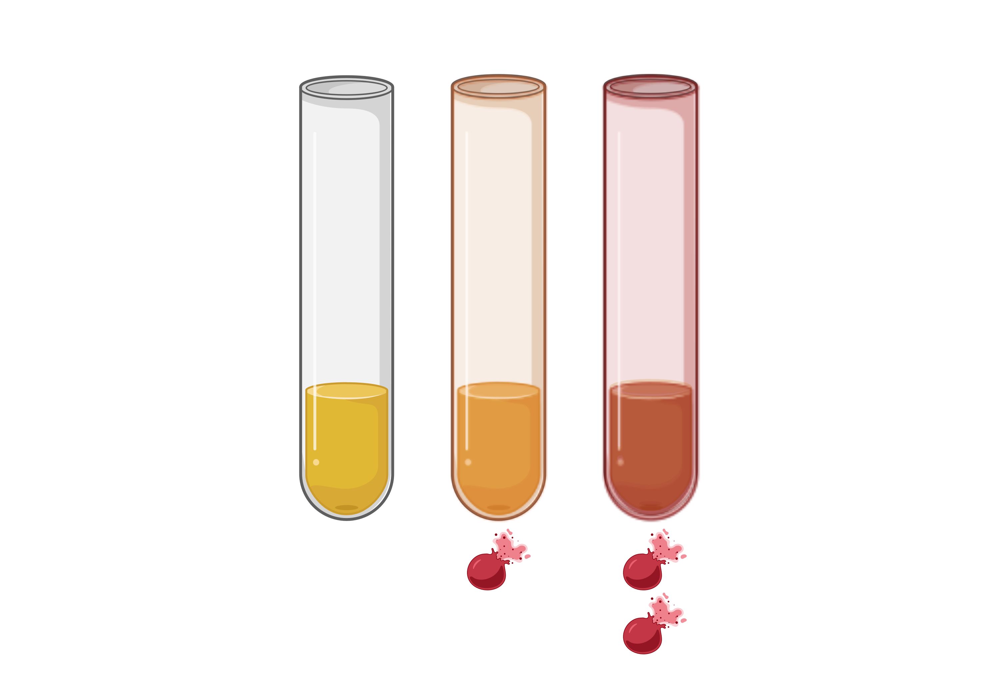

Define hemolysis
Describe hemolysis as rupture of erythrocytes with release of intracellular constituents into plasma or serum.
Pathology Resident Module
A concise interactive introduction to hemolysis: how it occurs, why it matters, and how laboratory professionals recognize and manage its analytical impact.

Learning Objectives
Describe hemolysis as rupture of erythrocytes with release of intracellular constituents into plasma or serum.
Identify collection, transport, processing, and patient-related contributors to in vitro and in vivo hemolysis.
Explain how hemolysis affects selected chemistry, coagulation, hematology, and immunoassay results.
Use hemolysis indices, analyte-specific thresholds, and clinical context to decide when to report, cancel, or recollect.
Hemolysis Overview
Hemolysis occurs when red blood cell membranes rupture before or during analysis. The released hemoglobin and intracellular contents can alter measured analyte concentrations, change sample appearance, and trigger instrument flags or result suppression.
Most hemolysis detected by the laboratory is in vitro and related to collection or handling. Less commonly, hemolysis reflects an in vivo pathologic process such as hemolytic anemia, transfusion reaction, mechanical valve-associated hemolysis, or microangiopathy.
A hemolyzed specimen is not automatically a poor-quality result for every analyte. Interpretation should be analyte-specific and guided by local validation data.
Mechanisms of Interference
Intracellular analytes enter serum or plasma. Potassium, LDH, AST, and magnesium may be falsely increased depending on degree of hemolysis.
Free hemoglobin absorbs light across commonly used wavelengths, creating positive or negative bias in photometric assays.
Hemoglobin and released enzymes may participate in assay reactions, consuming reagents or altering reaction endpoints.
Cell lysis changes specimen matrix composition and can dilute extracellular constituents, particularly in severe hemolysis.
Quick Check
Interactive Clinical Cases
A 34-year-old patient has a difficult peripheral draw. Serum is visibly hemolyzed. Potassium is 6.1 mmol/L; ECG is normal and renal function is normal.
A small-volume pediatric serum sample is markedly hemolyzed. The clinical team requests LDH as an add-on test to evaluate tissue injury.
A patient with suspected hemolytic anemia has plasma that is pink in two independently collected specimens. Haptoglobin is low and bilirubin is increased.
Final Quiz